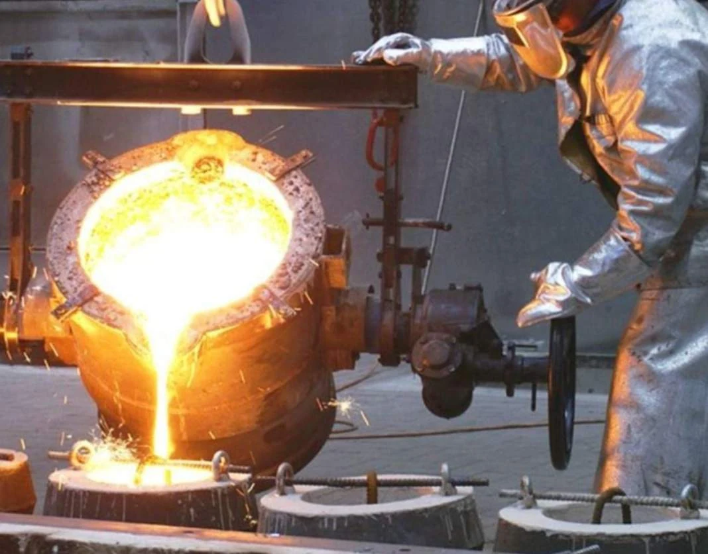
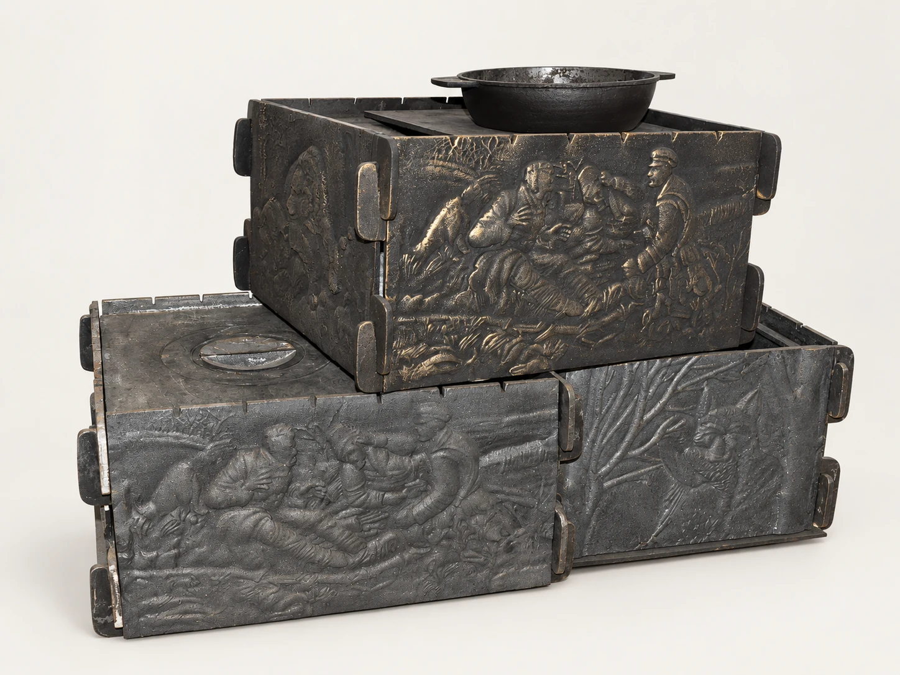

По вашей документации
По вашей документацииУслуги литейного производства · Тула
Промышленное и художественное литьё в Туле
ЦЕНТРСПЕЦМЕТАЛЛ рассматривает заказы на промышленные и художественные отливки. Начать можно с чертежа, эскиза или образца: уточним материал, геометрию, количество и требования к результату.

Что обсудим по вашему заказу
- Чугун, сталь, медь, бронза, латунь и алюминий
- По чертежам, эскизам и образцам
- Технология и партия — по согласованию
Стоимость и срок — после рассмотрения исходных данных.
Промышленные детали и заготовки
По документации производства рассматриваем детали насосов и запорной арматуры, элементы строительной техники, корпуса и заготовки для оборудования. Для каждого заказа важно согласовать не только внешний вид детали, но и её назначение, материал и требования к поставке.
Если исходных данных пока немного, опишите, где применяется изделие, и приложите фотографии или эскиз. На этом этапе определим, какие сведения нужны, чтобы оценить возможность изготовления и подготовить расчёт.
- Корпусные детали и элементы оборудования
- Втулки и литые заготовки
- Изготовление по документации заказчика
Художественное литьё
Обсуждаем декоративные и архитектурные элементы, орнаментальные панели, детали опор и изделия для пространства вокруг огня. Можно опираться на существующий образец или прислать собственный рисунок.
Внешний вид, размеры, соединения с другими деталями и отделку согласуем до изготовления. Фотографии каталога помогают выбрать направление, а точный состав поставки фиксируется для конкретного заказа.
- Рельефы, орнаменты и декоративные панели
- Опорные и художественные элементы
- Изделия и детали по согласованному эскизу
Материалы и технология
Возможности литейки включают работу с чугуном, сталью, медью, бронзой, латунью и алюминием. Если марка сплава задана чертежом, укажите её в запросе. Если материал ещё не выбран, опишите назначение и условия применения изделия.
В производственных материалах указаны формовка ПГС, ЖСС и ХТС, центробежное литьё втулок и оборудование для литья под давлением. Применимость способа к вашей детали подтверждается после рассмотрения задания.
От чего зависят стоимость и срок
При расчёте учитываем материал, сложность геометрии, необходимость оснастки, количество изделий и требования к поверхности. Отдельно уточняем, нужна ли отливка как заготовка или определённый состав последующих работ.
Стоимость, срок изготовления, условия оплаты и передачи продукции согласуются по конкретному запросу. Для начала достаточно прислать имеющиеся материалы — мы уточним недостающие данные.
Примеры и исходные материалы
Посмотрите также в каталоге
По вашей документации
Пример исполненияМангалы и изделия для огня
Мангал с художественным рельефом
Декоративные панели в изделии для приготовления на огне.
Стоимость по запросуПодробнее
 Под заказ
Под заказКостровые чаши
Чаша на фигурных опорах
Литая пластика для пространства вокруг огня.
Стоимость по запросуПодробнее
Перед обращением
Вопросы по услуге
Состав работ уточняем под конкретное изделие.
Можно ли обратиться без готового чертежа?
Да, начать обсуждение можно с фотографии, эскиза или образца. Для расчёта уточним размеры, назначение и требования к изделию.
Изготавливаете одно изделие или только партии?
Укажите нужное количество. Возможность единичного изготовления или партии и стоимость оснастки рассматриваются под конкретную задачу.
Можно использовать существующую модельную оснастку?
Сообщите, какая оснастка есть, и приложите её фотографии или документацию. Пригодность для согласованного изделия и технологии необходимо подтвердить перед расчётом.